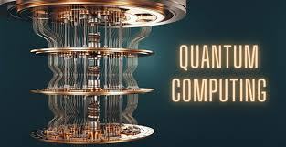

Quantum Computing Mengubah Arah Revolusi Digital
Teknologi komputasi kuantum kini menjadi salah satu fokus utama dalam dunia sains dan industri teknologi global. Dengan prinsip dasar mekanika kuantum, komputer kuantum mampu memproses informasi jauh lebih cepat dibanding komputer klasik yang menggunakan bit biner.
Perusahaan besar seperti Google, IBM, dan Intel tengah berlomba mengembangkan prosesor kuantum dengan stabilitas tinggi. Salah satu terobosan penting adalah qubit superkonduktor yang mampu menyimpan dan memproses data dengan efisiensi luar biasa.
Komputasi kuantum berpotensi merevolusi bidang keamanan siber, riset farmasi, hingga kecerdasan buatan. Meski masih menghadapi tantangan besar dalam stabilitas sistem, para peneliti optimis teknologi ini akan menjadi tulang punggung transformasi digital masa depan.
← Kembali ke Beranda